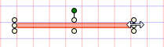
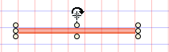
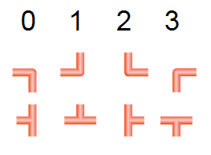

Drawing Pipes
- A graphics page is open.
- In the View menu, select Library.
- The Library Browser opens.
- In the Mode group, click Test
 .
. - Select the Library folder.
- In the Filter text box, enter the following filter criterion: *2D*pipe*.
- The pipes are displayed.
- In the corresponding color, select the straight pipe symbol, angle, T-piece or crossing and drag it to the graphics page.

NOTE:
The pipe color cannot be changed. The pipe symbol must be deleted and replaced with a new one if the color is wrong.
Repositioning a Straight Pipe Piece
- Select the pipe symbol using the cursor.
- Press the left mouse button to move the pipe symbol to the corresponding X/Y position. The pipe marking is not visible while positioning.
- Release the left mouse button at the desired position.
- The pipe piece is repositioned.
Extending Straight Pipe Piece
- Select the pipe symbol using the cursor.
- Position the mouse pointer over the left or right marking until the pointer's form changes

. - Left-click and drag the pipe end to the corresponding length. The pipe marking is not visible while resizing.
- Release the left mouse button at the desired position.
- The length of the pipe piece changes.
Rotating a Straight Pipe Piece
- Select the pipe symbol using the cursor.
- Position the mouse pointer over the green highlighting until the pointer's form changes

. - Left-click and hold to turn the pipe symbol to the desired angle. The pipe marking is not visible while positioning.
- Release the left button as soon as you have reached the desired angle.
- The pipe symbol is positioned at the appropriate angle.
NOTE:
The angle of the desired symbol can be entered at the following location: Symbol Instance Properties > Layout > Angle.
Rotating an Angle or T-Piece
- In the Mode group, click Test .
- Select the angle symbol or T-piece symbol.
- Left-click and hold, then right-click until the pipe symbol displays in the desired direction.

NOTE:
The angle of the desired symbol can be entered at the following location: Symbol Instance Properties > Layout > Angle.